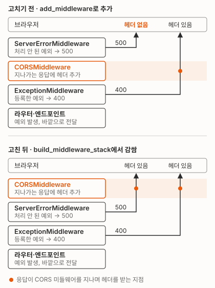

fastapi 0.162.0 starlette 1.10.0
/boom 500 acao= 없음
/ok 400 acao= https://a.example
API 게이트웨이가 하던 CORS 처리를 FastAPI 앱이 맡게 되자, 앱이 낸 500만 브라우저에서 네트워크 오류로 보이게 됐어요. 게이트웨이 플러그인이 등록되지 않은 출처에도 *로 답하고 있어서 내린 변경이었어요. 위 출력은 개발 서버에서 최소 앱으로 재현한 결과예요. acao는 다른 출처의 응답을 읽어도 되는지 알려 주는 Access-Control-Allow-Origin 헤더예요. 허용 목록에 있는 출처(https://a.example)로 보냈는데, 400에는 이 헤더가 붙고 500에는 없었어요.
FastAPI 앱은 요청을 미들웨어(요청과 응답이 차례로 거치는 처리 단계) 여러 겹에 통과시키는데, 처리 안 된 예외로 만드는 500은 CORS 미들웨어보다 바깥 단계에서 만들어져 헤더를 받지 못해요. 그래서 CORS 미들웨어를 가장 바깥으로 옮겨 500에도 헤더가 붙게 했어요. 헤더가 붙으면 화면 코드가 500 본문까지 읽게 되는데, 그 본문에 예외 원문이 실려 있어서 고정 문구만 내보내게 바꿨어요.
500에서만 빠지는 CORS 헤더
브라우저는 다른 출처에서 온 응답에 Access-Control-Allow-Origin 헤더가 없으면 그 응답을 스크립트에 넘기지 않아요. 그래서 fetch나 axios는 상태코드도 본문도 받지 못하고 네트워크 오류로 처리해요. 화면에는 “서버 오류” 안내 대신 연결 실패처럼 보여요.
응답 종류별로 헤더가 붙는지 나눠 보니 이랬어요.
| 응답 | 만드는 곳 | CORS 헤더 |
|---|---|---|
| 처리된 오류(400 등) | 앱, 엔드포인트나 예외 종류별 처리기 | 있음 |
| 처리 안 된 예외(500) | 앱, 가장 바깥 미들웨어 | 없음 |
| 요청 한도 초과(429) | 게이트웨이 | 없음 |
- 설정: 같은 허용 출처로 보낸 400에는 헤더가 붙었으니 허용 출처 목록은 맞게 들어가 있었어요.
- 버전: 업그레이드 전 버전인 FastAPI 0.116에서도 결과가 같았어요.
- 429: 개발 환경 게이트웨이에서 요청 한도를 넘기도록 preflight(본 요청 전에 브라우저가 허용 여부를 먼저 묻는
OPTIONS요청)를 연달아 보냈어요. 통과한 요청에는 헤더가 있고, 429로 막힌 요청에는 없었어요. - 운영 영향: 고치기 직전 7일 동안 운영 API 호스트에서는 5xx와 429가 0건이라, 사용자가 겪은 사례는 찾지 못했어요.
500을 만드는 위치
요청은 바깥 미들웨어부터 안쪽으로 들어가고, 응답은 만들어진 곳에서 바깥쪽으로 되돌아 나가요. Starlette 앱의 순서는 바깥부터 ServerErrorMiddleware(처리 안 된 예외를 500 응답으로 바꾸는 단계), add_middleware로 넣은 미들웨어들, ExceptionMiddleware(등록한 예외를 처리기에 넘기는 단계), 라우터예요. 위 최소 앱의 순서를 바깥부터 찍으면 이렇게 나와요. 첫 줄이 FastAPI 0.116, 둘째 줄이 0.162예요.
ServerErrorMiddleware -> CORSMiddleware -> ExceptionMiddleware -> APIRouter -> method
ServerErrorMiddleware -> ExceptionTelemetryMiddleware -> CORSMiddleware -> ExceptionMiddleware -> AsyncExitStackMiddleware -> APIRouter -> method
0.162에는 프레임워크가 넣는 미들웨어가 사이에 더 끼지만, 이 셋의 순서는 같아요. add_middleware로 넣은 미들웨어는 언제나 ServerErrorMiddleware와 ExceptionMiddleware 사이에 들어가요.
처리 안 된 예외는 안쪽 미들웨어들을 그대로 빠져나와 가장 바깥의 ServerErrorMiddleware까지 올라가고, 500은 여기서 만들어져요. 처리기를 등록하지 않아도 ServerErrorMiddleware가 기본 500을 만들어서, 헤더가 빠지는 건 같아요. 반면 BadRequestError처럼 특정 예외에 등록한 처리기는 가장 안쪽 ExceptionMiddleware가 실행해요.
Exception이나 500에 등록한 처리기는 ServerErrorMiddleware에서 실행돼요. 이 앱도 처리 안 된 예외를 받는 처리기를 이렇게 등록해 두고 있었어요.
@app.exception_handler(Exception)
async def global_handler(request: Request, exc: Exception):
"""처리되지 않은 모든 예외를 포괄적으로 처리한다."""400은 가장 안쪽에서 만들어져, 나가는 길에 CORS 미들웨어를 지나며 헤더를 받아요. 500은 CORS 미들웨어보다 바깥에서 만들어지니 CORS 미들웨어를 지나지 않아요.

CORS를 가장 바깥으로
add_middleware로는 ServerErrorMiddleware 바깥에 미들웨어를 둘 수 없어요. 그래서 미들웨어 순서를 조립하는 메서드인 build_middleware_stack을 오버라이드했어요. 이 메서드가 만든 결과 전체를 CORS 미들웨어로 한 번 더 감싸는 방식이에요.
고치기 전에는 다른 미들웨어처럼 add_middleware로 넣고 있었어요.
app.add_middleware(
DynamicCORSMiddleware,
allow_origins=settings.CORS_ORIGINS,
# … (나머지 인자 생략)
)고친 뒤에는 FastAPI를 상속한 클래스가 맨 바깥을 감싸요.
class CORSOutermostFastAPI(FastAPI):
"""CORS 를 ServerErrorMiddleware 바깥에 두는 FastAPI.
add_middleware 로 넣으면 ServerErrorMiddleware 안쪽에 쌓여, 처리되지 않은 예외의 500 에
CORS 헤더가 빠진다. 브라우저는 그 응답을 스크립트에 넘기지 않아 "네트워크 오류"로 보인다.
"""
def build_middleware_stack(self) -> ASGIApp:
# 정적 허용(목록·정규식) + DB 테넌트 도메인(CorsOriginRegistry) 동적 허용
return DynamicCORSMiddleware(
super().build_middleware_stack(),
allow_origins=settings.CORS_ORIGINS,
# … (나머지 인자 생략, 고치기 전과 같음)
)DynamicCORSMiddleware는 CORSMiddleware를 확장해, 설정에 적힌 출처에 더해 DB에 등록된 고객사 도메인도 허용해요. 인자를 그대로 옮겼으니 허용 판정은 바뀌지 않고, 등록되지 않은 출처라면 500이어도 헤더가 붙지 않아요. 하나 달라진 건 preflight예요. CORS 미들웨어가 바로 답하는 preflight는 이제 요청 지표(Prometheus)를 모으는 미들웨어에 닿지 않아 지표에서 빠져요.
표준 CORSMiddleware를 쓰는 앱이라면 같은 자리에 CORSMiddleware(super().build_middleware_stack(), allow_origins=[...])를 두면 돼요. 최소 앱으로 0.116과 0.162에서 같은 결과를 확인했어요.
고친 뒤 확인
- 테스트: 처리 안 된 500에 허용 출처 헤더가 붙는지 보는 테스트가 수정 전에는 실패했어요. 수정 뒤에는 FastAPI 0.116과 0.162 양쪽에서 통과했어요.
- 함께 고정한 동작: 미등록 출처의 500에는 헤더가 없어요. 처리된 400에는 헤더가 1개만 붙어요(값이 2개면 브라우저가 CORS 실패로 처리해요). preflight 판정은 그대로예요.
- 재현 시험: 헬스 체크 경로만 일부러 예외를 내게 바꿔 요청했어요. 운영에 나갈 이미지를 로컬에서 띄운 시험에서는 허용 출처의 500에 헤더가 1개, 미등록 출처에는 0개였어요. 교체 전 이미지가 떠 있던 개발 서버 파드에서는 허용 출처도 0개였어요.
- 게이트웨이 경유: 배포 뒤 인증 없이 보내 401이 나오는 요청과 preflight를 운영 게이트웨이로 보냈어요. 허용 출처 헤더는 1개였고, 미등록 출처의 preflight는 400이었어요.
- 못 한 것: 인증된 실제 요청으로 500을 낼 안전한 경로가 없어서, 실요청 500으로는 재현하지 않았어요.
500 본문에 실리던 예외 원문
500 본문의 error.message에는 원래부터 예외 원문(str(exc))이 들어 있었어요. API를 직접 부르는 쪽에는 헤더와 상관없이 보이던 값이고, 어드민과 사이트의 오류 처리 함수는 이 값을 먼저 읽어 화면에 띄워요.
return data?.error?.message || data?.message || fallback원문에 섞여 나갈 수 있던 것은 이랬어요.
- 입력값: 개발 서버 로그에
'<요청 값>' is not a valid <열거형 이름>꼴의 원문이 남아 있었어요. 열거형으로 바꾸지 못한 입력값이 문구에 그대로 들어가요. - 외부 API 인증키: httpx의
raise_for_status()가 던지는 예외 문구에는 요청 주소 전체가 들어가요. 주소에 인증키를 싣는 외부 API라면 이 예외가 처리되지 않은 채 올라올 때 키가 응답과 로그로 나가요. 그 클라이언트는 상태코드만 담은 전용 예외를 던지게 바꿔, 예외 문구에 키가 실리지 않게 했어요.
처리 안 된 예외의 응답에는 이제 고정 문구만 나가요. 원문은 서버 로그에 남겨 원인 추적에 써요.
else:
+ # 원문에는 내부 식별자·입력값·외부 API 주소가 섞일 수 있어 응답에 넣지 않는다(위 로그에 남는다)
error_detail = ErrorDetail(**ErrorResponseMessage.UNKNOWN_ERROR)
- if exc:
- error_detail.message = str(exc)이렇게 바꾸면 ValueError("문구")처럼 일반 예외에 넣은 문구도 화면에 나가지 않아요. 그래서 바꾸기 전에 코드를 구문 분석하는 스크립트로, 내장 예외에 한글 문구를 넣어 던지는 곳을 찾아 하나씩 봤어요. 입력 형식 안내 문구는 요청 검증 단계에서 422로 따로 나가 영향이 없었고, 나머지는 설정·데이터·외부 응답이 맞지 않을 때의 내부 오류 문구였어요. 화면이 만들어 보내는 검색 조건을 해석하지 못할 때의 문구도 이제 고정 문구로 나가요.
운영 로그로도 확인했어요.
- 처리 안 된 예외: 최근 4주 동안 남은 처리 안 된 예외의 원문은 연결이 작업 중간에 끊겼다는 한 종류뿐이었어요.
- 인증키: 같은 기간 운영 로그에서 외부 API 인증키 이름으로 찾은 줄은 없었어요.
그대로 남은 게이트웨이 응답
앱이 만드는 응답은 이제 500까지 헤더가 붙어요. 허용 출처의 처리 안 된 500에도 0개였던 CORS 헤더가 1개 붙어요. 고치기 직전 7일 동안 운영 API에 5xx가 없어서, 사용자가 체감하는 차이는 재지 못했어요. 게이트웨이가 직접 만드는 응답에는 여전히 헤더가 없어요. 확인한 것은 429뿐이고, 413이나 업스트림 장애 때의 502·503·504도 같을 것으로 봐요. 장애 때 화면이 네트워크 오류로 보일 수 있지만, 앱 바깥의 일이라 이번에는 고치지 않았어요.
게이트웨이의 CORS를 앱으로 옮긴다면 오류 응답마다 어디서 만들어지는지 나눠 보면 돼요.
- 앱 안: CORS 미들웨어가
ServerErrorMiddleware보다 바깥에 있는지 봐요.add_middleware로 넣었다면 안쪽이에요. - 앱 밖: 게이트웨이가 직접 만드는 응답에는 앱이 헤더를 붙일 수 없어요. 확인한 건 429예요.